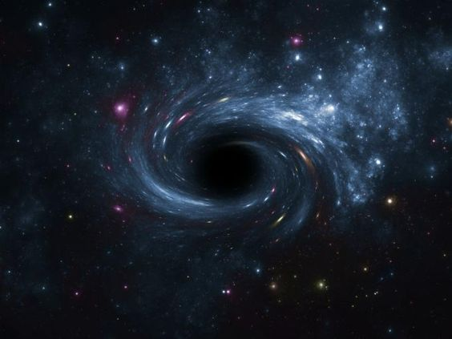
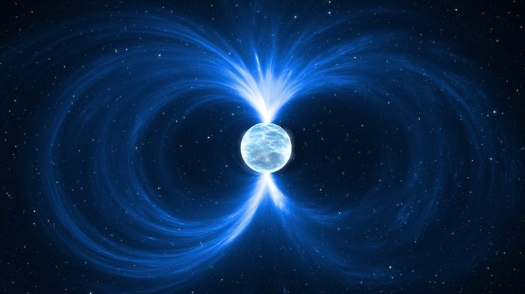
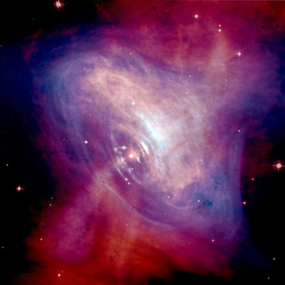

¿Qué son los cuerpos celestes?
Los cuerpos celestes son objetos naturales que se encuentran en el universo, fuera de la
atmósfera terrestre. Cada uno de estos presentan caracteristicas únicas que
han sido objeto de estudio y observación por parte de astrónomos y científicos durante
siglos.
Los cuerpos celestes estan clasificados en diferentes grupos según sus caracteristicas.
Las
caracteristicas que se toman en cuenta son:
Tamaño, Masa, Temperatura, Composición química, Órbita, Velocidad y
Luminosidad.
La exploración de los cuerpos celestes nos permite entender mejor el universo y su
evolución.
Cuerpos celestes principales |
||
|---|---|---|
Estrellas |
Son objetos luminosos que emiten energía en forma de luz o calor. Se formaron por la condensación del hidrógeno y del polvo cósmico, y son capaces de irradiar luz propia a través de reacciones de fusión nuclear. Fuente | |
Planetas |
Son cuerpos que orbitan alrededor de una estrella. Los planetas se diferencian de las estrellas, porque estas tienen una mayor cantidad de masa (densidad). Por esa razón, los planetas no pueden realizar procesos de fusión termonuclear que les permitiría emitir luz propia, como lo hacen las estrellas. Fuente | |
Galaxias |
Son sistemas de estrellas, gas y polvo unidos por la gravedad. Una galaxia es una estructura astronómica que agrupa conjuntos de estrellas (en sus respectivos sistemas solares) y materia interestelar como gases, campos de asteroides, etc. Fuente | |
Cometas |
Son cuerpos de hielo y polvo que orbitan al rededor del sol. La mayoría viaja a una distancia alejada y segura del Sol, sin embargo, algunos se han estrellado contra el astro luminoso o han pasado tan cerca, que se rompieron y evaporaron Fuente | |
Meteoritos |
Son fenómenos luminosos conformados por meteoroides que logran atravesar la atmósfera terrestre y que se desintegran antes de impactar con la superficie. Fuente | |

Agujeros Negros
Un agujero negro es una región del espacio-tiempo donde la gravedad es tan intensa que nada, ni siquiera la luz, puede escapar. Se forma cuando una estrella masiva (con una masa mínima de 3-4 veces la masa del Sol) colapsa bajo su propia gravedad, comprimiendo su masa en un punto llamado “singularidad”Estrellas de Neutrones
Una estrella de neutrones es el remanente de una estrella masiva que ha explotado como supernova. Cuando la estrella colapsa, su núcleo se comprime en una esfera extremadamente densa, compuesta principalmente de neutrones
Púlsares
Un pulsar es una estrella de neutrones que gira rápidamente y emite radiación electromagnética en forma de pulsos regulares. Los pulsares se forman cuando una estrella de neutrones tiene un campo magnético intenso y gira rápidamente, creando un “faro” de radiación que se puede detectar desde la Tierra.
Cuásares
Un cuásar es un objeto astronómico extremadamente luminoso y lejano que se cree que es un agujero negro supermasivo en el centro de una galaxia. Los cuásares emiten enormes cantidades de energía en forma de radiación electromagnética.